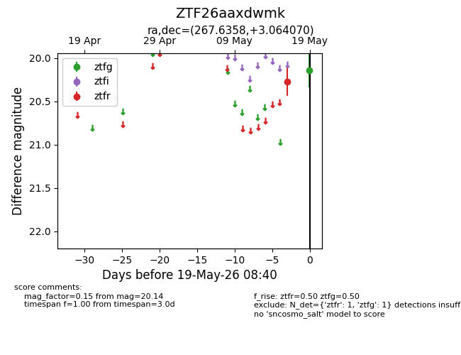
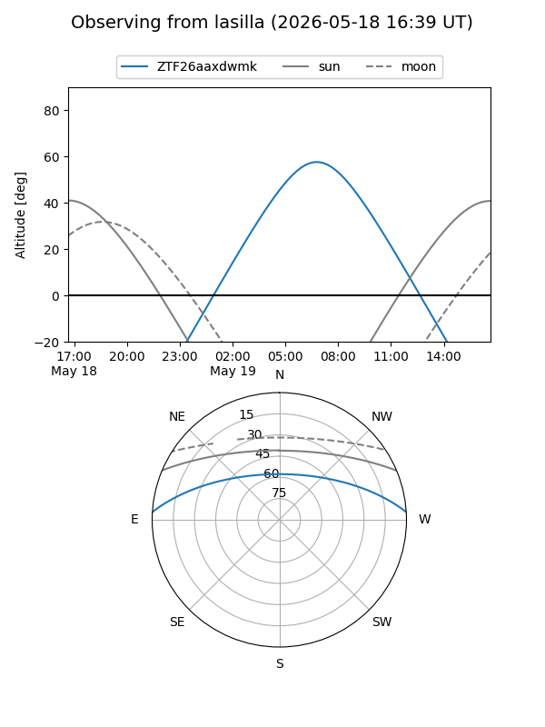
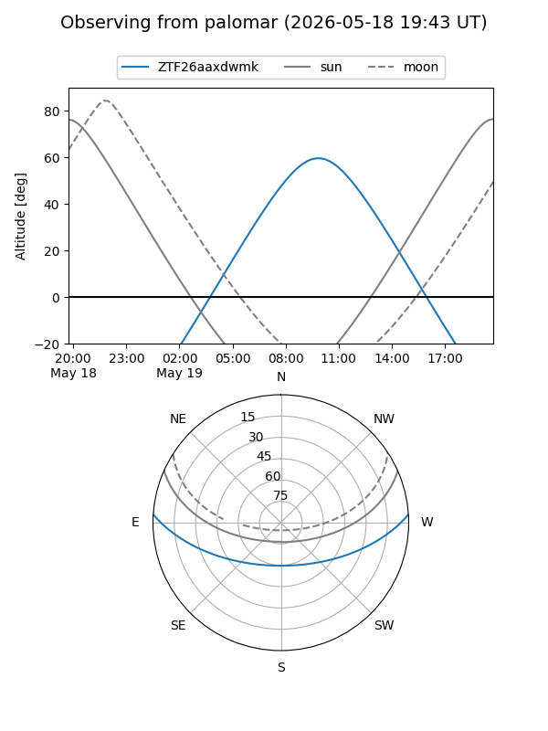

ZTF26aaxdwmk
Target ZTF26aaxdwmk at 2026-05-19 08:42
Aliases and brokers:
FINK: link
Lasair: link
ALeRCE: link
alt names
ZTF26aaxdwmk (ztf,fink_ztf)
Coordinates:
equatorial (ra, dec) = 267.6358,+3.06407
equatorial (HMS+DMS) = 17:50:32.60,+03:03:50.65
galactic (l, b) = (28.6589,+14.93595)
Flags:
Photometry:
last ztfg=20.14, ztfr=20.28
1 ztfg, 1 ztfr detections
Lightcurve

Visibility


Additional plots